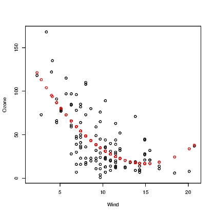

This chapter presents the most basic regression models. To really get the most out of R and regression techniques (such as those taught in second or later statistics courses) you will need to look for guidance from a suitable textbook, many of which incorporate use of R as the preferred software tool.
The easiest way to fit regression models is using data that are contained in a data.frame. This means we can use the attach() command to get at the separate components if we need them. An alternative is to have direct access to each variable independently within our current workspace. For neatness, I prefer to keep data in the data.frame format.
We can use the air quality data described in Chapter 7. Recall that it is available from your current workspace as it is contained within the datasets package. Typing
will make the data explicitly available to you in your current R workspace.
We can look for relationships among the variables within this data set using the techniques described in Chapter 7. Note in particular the scatter plot matrix presented in Exhibit 7.10.
To obtain the equation for a straight line relationship of the form
|
| (12.1) |
we use the lm() command. The first argument for this command is a formula which is the main component of any lm() command you issue. It is of the form y~x where the y is the response variable and the x is the predictor variable. We will see how to modify the right hand side of the formula in subsequent sections. The ε is the error term for our model; we look at that aspect more in Section 12.4 below.
The above equation is a simpler version than you will see in many textbooks. You might see a subscript on the y, x, and ε when referring to individual observations, but when we refer to the set of response values and the set of predictor values, we are usually thinking of them as vectors; as such, the notation above really should indicate that y, x, and ε are vectors. A bold face is often used for vectors and matrices or sometimes vectors are underscored. This additional notation is not used in the current context.
A second common argument is the data statement. This means that the model formula can be stated using variable names from within the data.frame mentioned in the data statement. Models to explain the amount of Ozone using Wind and subsequently Temp are as follows.
There are very good reasons for creating the new objects in this example. Aside from the use of the summary() method and anova() command to extract more useful information about the model, we will refer back to the object using other commands in subsequent sections of this chapter. It also means we can investigate the model object, and extract some quantities on their own. For example, it’s common to want to extract the R2 for a model. We can’t do this from the model object itself, but we can from the summary() of the model.
Adding a fitted line to the scatter plot when a simple relationship has been fitted is actually a very simple task. Note that when we saw the outcome of the simple model above, we obtained just the intercept and slope coefficient values until we employed the summary() method to extract more useful information. These two values will be used by the abline() function to add the straight line to an existing plot. See Exhibit 12.1 for example.
We can see from these graphs that our straight line model might be appropriate for explaining Ozone using Temp as the predictor, but that the straight line model using Wind as the predictor is not a good idea as there is fairly obvious curvature in the relationship. As it happens neither of these models are perfect and more work is required.
R has many useful built-in methods for doing common tasks efficiently. Obtaining residual plots for a model is a great example. The plot() command acts on a lm object by generating a series of plots. The most commonly used of these plots are the plot of residuals vs the fitted values and the normal probability plot of residuals. These plots are generated by many statistical applications but the other two presented by default in R are not always given by other programs. R also provides a Scale-Location plot of the square root of the absolute value of residuals against the fitted values, and a plot of residuals against the leverages. These approaches for diagnosing problems in a regression model are seldom taught in introductory statistics courses. The scale vs location plot is another means of determining if the residuals have constant variance. Leverage is a measure of how much influence an observation has on determining the model. A rule of thumb says that a leverage of more than twice the average leverage is a problem.
The diagnostic plots for the inadequate model for Ozone being predicted by a linear function of Wind are presented in Exhibit 12.2.
These plots are enhanced by R to add more information than the basic user is familiar with. Additional lines are added to three of the plots to assist in diagnosing problems. We can see from this plot that the model is inadequate as there is a nonlinear relationship between the response and predictor, and further that the residuals might not have very constant variance.
It might be easier to extract just the information we want, so we can build simpler plots ourselves. We need to find the residuals, fitted values and leverages for the model. These are found using the resid(), fitted(), and hatvalues() commands respectively.
The various plots can be constructed using the plot(), and qqnorm() commands as needed, but if we want the information on the leverages in text form we will need to do tasks like
The last command in this block has printed out the 8 observations that have excess leverage on this model. We should probably see if these are days that had extremely high wind. This is not done as this model has already been shown to be poor at explaining the amount of Ozone in the atmosphere.
Given the obvious curvature in the relationship between Ozone and Wind appears monotonic, we can probably try both transforming the variables, and polynomial regression to explain the relationship. We take advantage of the fact that R has an in-built way of producing polynomial terms for insertion into models, and use the poly() function in this instance. This command needs to know which variable to work with and the degree of the polynomial desired. For example, to fit the quadratic model we would use the commands
Note that in order to obtain a model with the correct coefficients for the polynomial terms in the model, we need to use the raw argument, setting it to TRUE.
We usually justify the use of a quadratic form by determining there is no practical benefit in making the model more complicated. To do this, we need to investigate the model for the cubic form of the relationship using
Rather than continuously investigate the summaries of the various models, we can employ the anova() command to compare the models.
We can compare all three models created thus far because they are a series of nested models. We could not include the model using Temp as the predictor in this command for example.
On the basis of the output from our anova() command, we might assume that the quadratic form was sufficient to explain the relationship between Ozone and Wind because there is little to be gained by adding the cubic term to our model. Validation of the chosen model via the residual analysis is suggested as a next step.
The abline() command demonstrated earlier is only useful for straight lines. We have seen that the quadratic function is better at explaining the relationship between Ozone and Wind. One solution is to store the fitted values from this model and plot them against the Wind variable, but this will only show the series of points not a smooth curve.

Note that the points() command used here includes the col argument to change the colour of the points to red — the second colour in the list of colours.
Also note that there are missing values in the records for Ozone. The fitted values from the model are only calculated for the observations where Ozone was recorded, so we have employed the !() logical operator and is.na() command to include only complete cases for Ozone and Wind.
Another solution that plots a curve instead of points, is demonstrated in Section ??. It is much more elegant, especially given the missing data problem encountered in this example.
The addition of multiple terms on the right hand side of the formula in the lm() command is very simple. We can put both Wind and Temp into a model as predictors using
If we want to combine the models for the quadratic form for Wind and the linear form of Temp we would
This then allows us the opportunity of using the anova() command as demonstrated above to compare these two models and one constructed earlier which used only Temp as a predictor.
The creation of interaction variables is also simple in R Changing the “+" sign in the model to a “*" sign tells R that we want the two main variables and their interaction to be included. The interaction term uses a “:" between the variable names in the output.
Note that this model includes two interaction terms, and on the face of it, neither term looks like it is contributing towards explaining the amount of ozone in the atmosphere. This can be tested using
Multiple regression models can be checked using the approaches described in Section 12.4 above, but it may also prove useful to plot residuals from the current model against each current and potential predictor variable in the data set.
When working with a variable that can take one of two values, such as gender, many statistical packages need the user to create an indicator variable if this effect is to be incorporated into a regression model.
An indicator variable takes the values zero or one, where a “1" indicates one of the two possible values. Normally, the software will create an indicator for each of the values of the original variable, and when the original variable takes three levels, three indicator variables are made.
The advantage of the indicator is that the model fitted has a coefficient for the indicator variable that reflects the constant difference between the two groups within the data implied by the original variable.
R does not need explicit creation of indicator variables as it will see the form of the variable and create indicator variables in the background. The output for an indicator variable in the regression summary is only ever so slightly different in that you will see GenderM where you might have thought to see just Gender. This is because R tells you that the indicator variable created, and therefore the coefficient printed in the output, is for the Male level of Gender. For reasons not explained here, you will not see both GenderF and GenderM in the output unless you explicitly ask R not to fit the intercept term.
As an example,